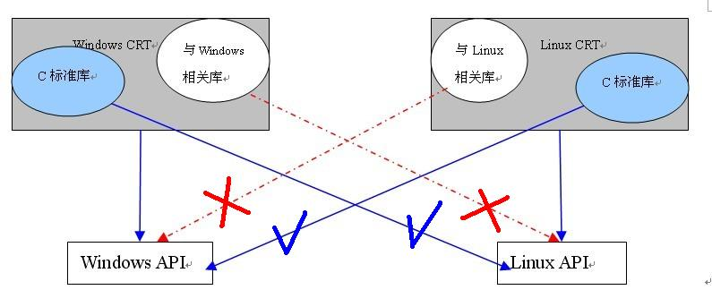

c运行库、c标准库、windows API的区别和联系
C运行时库函数
C运行时库函数是指C语言本身支持的一些基本函数，通常是汇编直接实现的。
API函数
API函数是操作系统为方便用户设计应用程序而提供的实现特定功能的函数，API函数也是C语言的函数实现的。
区别
他们之间区别是：API函数是针对操作系统的，C语言运行时函数则是针对C语言本身的。
·1、运行时库就是 C run-time library，是C而非C++语言世界的概念。
取这个名字就是因为你的C程序运行时需要这些库中的函数。
·2、C语言是所谓的“小内核”语言，就其语言本身来说很小（不多的关键字，程序流程控制，数据类型等）；
所以，C语言内核开发出来之后，Dennis Ritchie和Brian Kernighan就用C本身重写了90%以上的UNIX系统
函数，并且把其中最常用的部分独立出来，形成头文件和对应的LIBRARY，C run-time Library就是这样
形成的。
·3、随后，随着C语言的流行，各个C编译器的生产商/个体/团体都遵循老的传统，在不同平台上都有相对应
的Standard Library，但大部分实现都是与各个平台有关的。由于各个C编译器对C的支持和理解有很多
分歧和微妙的差别，所以就有了ANSI C；ANSI C（主观意图上）详细的规定了C语言各个要素的具体含义
和编译器实现要求，引进了新的函数声明方式，同时订立了Standard Library的标准形式。所以C运行时
库由编译器生产商提供。至于由其他厂商/个人/团体提供的头文件和库函数，应当称为第三方C运行库
（Third party C runtime libraries）。
·4、C run-time library里面含有初始化代码，还有错误处理代码(例如divide by zero处理)。你写的程序
可以没有math库，程序照样运行，只是不能处理复杂的数学运算，不过如果没有了C run-time库，main()
就不会被调用，exit()也不能被响应。因为 C run-time Library 包含了C程序运行的最基本和最常用的
函数。
·5、到了C++世界里，有另外一个概念：Standard C ++ Library，它包括了上面所说的C run-time Library
和STL。包含C run-time Library的原因很明显，C++是C的超集，没有理由再重新来一个C++ run-time
Library。VC针对C++加入的Standard C ++ Library主要包括：LIBCP.LIB、LIBCPMT.LIB和MSVCPRT.LIB。
·6、Windows环境下，VC提供的 C run-time Library又分为动态运行时库和静态运行时库。
动态运行时库
动态运行时库主要包括：
·DLL库文件：msvcrt.dll(或 MSVCRTD.DLL for debug build)
·对应的Import Library文件：MSVCRT.LIB(或 MSVCRTD.LIB for debug build)
静态运行时库
静态运行时库(release版)对应的主要文件包括：
·LIBC.LIB(Single thread static library, retail version)
·LIBCMT.LIB(Multithread static library, retail version)
msvcrt.dll提供几千个C函数，即使是像printf这么低级的函数都在msvcrt.dll里。其实你的程序运行时，很大一部分时间是在这些运行库里运行。在你的程序(release版)被编译时，VC会根据你的编译选项(单线程、多线程或DLL)自动将相应的运行时库文件(libc.lib、libcmt.lib或Import Library msvcrt.lib)链接进来。
2.C运行时库的作用
C运行时库除了给我们提供必要的库函数调用（如memcpy、printf、malloc等）之外，它提供的另一个最重要的功能是为应用程序添加启动函数。
C运行时库启动函数的主要功能为进行程序的初始化，对全局变量进行赋初值，加载用户程序的入口函数。
不采用宽字符集的控制台程序的入口点为mainCRTStartup(void)。下面我们以该函数为例来分析运行时库究竟为我们添加了怎样的入口程序。这个函数在crt0.c中被定义，下列的代码经过了笔者的整理和简化：
1 | void mainCRTStartup(void) |
从以上代码可知，运行库在调用用户程序的main或WinMain函数之前，进行了一些初始化工作。初始化完成后，接着才调用了我们编写的main或WinMain函数。只有这样，我们的C语言运行时库和应用程序才能正常地工作起来。
除了crt0.c外，C运行时库中还包含wcrt0.c、 wincrt0.c、wwincrt0.c三个文件用来提供初始化函数。wcrt0.c是crt0.c的宽字符集版，wincrt0.c中包含 windows应用程序的入口函数，而wwincrt0.c则是wincrt0.c的宽字符集版。
Visual C++的运行时库源代码缺省情况下不被安装。如果您想查看其源代码，则需要重装Visual C++，并在重装在时选中安装运行库源代码选项。
下面看一个未正确使用C运行时库的控制台程序：
1 | \ |
我们在”rebuild all”的时候发生了link错误：
nafxcwd.lib(thrdcore.obj) : error LNK2001: unresolved external symbol endthreadex
nafxcwd.lib(thrdcore.obj) : error LNK2001: unresolved external symbol beginthreadex
main.exe : fatal error LNK1120: 2 unresolved externals
Error executing cl.exe.
发生错误的原因在于Visual C++对控制台程序默认使用单线程的静态链接库，而MFC中的CFile类已暗藏了多线程。我们只需要在Visual C++6.0中依次点选Project->Settings->C/C++菜单和选项，在Project Options里修改编译选项即可。
C运行库和C标准库的关系
C标准库，顾名思义既然是标准，就是由标准组织制定的。是由“美国国家标准协会（American National Standards Institute,ANSI）”为了规范C语言库而制定的标准。在最初，各个大学各个公司使用的C语言库都不尽相同，造成相互移植非常困难，在这个背景下，制定了这个标准。
C运行库，是和平台相关的，即和操作系统相关的。它由不同操作系统不同开发平台提供不同的C运行库。但是C运行库的部分实现是基于C标准库的，即C运行库是各个操作系统各个开发工具根据自身平台开发的库，某种程度上，可以说C运行库是C标准库的一个扩展库，只是加了很多C标准库所没有的与平台相关的或者不相关的库接口函数。举例子如：c标准库的strcpy函数负责字符串的拷贝，但是由于缺少对目地字符串缓冲区大小的控制，极有可能导致缓冲区溢出（大量的缓冲区溢出攻击都是由于这种漏洞而产生的）；相反，Windows提供了能够实现同样功能的安全的字符串拷贝函数，减少了缓冲区攻击的可能，strcpy_s。这些函数是以c运行库的方式提供的，当然，不同的操作系统，c运行时库可能不同，但是对c标准库的支持是完全一致的，也就是说，在不同的操作系统上，使用同一个c标准库的函数必然产生一致的结果。
C标准库中提供的有：
l 标准输入输出（stdio.h）。
l 文件操作（stdio.h）。
l 字符操作（ctype.h）。
l 字符串操作（string.h）。
l 数学函数（math.h）。
l 资源管理（stdlib.h）。
l 格式转换（stdlib.h）。
l 时间/日期（time.h）。
l 断言（assert.h）。
l 各种类型上的常数（limits.h & float.h）。
你写的程序可以没有math库，程序照样运行，只是不能处理复杂的数学运算，不过如果没有了C run-time库，main()就不会被调用，exit()也不能被响应。因为C run-time library包含了C程序运行的最基本和最常用的函数。
如下是C运行库与C标准库的关系：
一个C运行库大致包含了如下功能：
l 启动与退出：包括入口函数及入口函数所依赖的其他函数等。
l 标准函数：由C语言标准规定的C语言标准库所拥有的函数实现。（C标准库）
l I/O：I/O功能的封装和实现，参见上一节中I/O初始化部分。
l 堆：堆的封装和实现，参见上一节中堆初始化部分。
l 语言实现：语言中一些特殊功能的实现。
l 调试：实现调试功能的代码。
操作系统API和C运行库CRT，C标准库之间区别
首先，C语言要早于Windows出现，而且C语言实际标准制定的开始时间也要早于Windows（API概念出现的）系统的开发时间。所以Windows系统在开发的时候是完全可以使用C语言的。目前最多的说法是用C和汇编实现的。那么只要用C，就可能用C标准库。
我们假设两种情况，一是Windows API的实现包含部分C标准库函数的功能实现，这就决定了这部分操作系统API的实现是由调用标准库实现的，那么在发布时需要加入所用到的c标准库DLL一同发布。
二是微软的内核（包括API）开发是使用着一个和平台严格相关的C语言的静态的链接库，这样不必提供Dll也能开发和发行。而且必然的这个C库是在汇编的基础上实现的，也就是说这个库里面的C函数都是（至少有很大比例）披着C语法的汇编代码。
要你是微软，你选择哪个呢？也许是两者兼而有之，也许是后者。
一般情况下，我们说C运行库暗含的意思是哪种平台哪个开发平台的C运行库，
CRT的实现是基于Windows API的，而WindowsAPI的开发也是基于C语言的，但不是或者不一定基于CRT（或者C标准库）的。
再深一步，虽然CRT是基于操作系统 API实现的，但并不代表所有的CRT封装了操作系统 API，如一些用户的权限控制，操作系统线程创建等都不属于C运行库，于是对于这些操作我们就不得不直接调用操作系统API或者其他库。
总结一下，C标准库就是任何平台都可以使用的基本C语言库。而CRT除了将C标准库加入所属范围外，还扩展了与平台相关的接口库，这些接口实现根据不同平台调用不同平台的操作系统API。
如下图所示，采用C标准库编写的程序可以应用到windows平台，也可以应用到linux平台；而用CRT另外与平台相关的库函数编写的应用程序不能跨平台运行。

而不同平台的操作系统API实现，是用C标准库呢，还是汇编呢，这个可有，可没有。毕竟那么多windows API只要发现一个调用C标准库的了，就有了。概念理解了即可，至于微软实现的时候基于何种考虑不使用C标准库，或者使用C标准库都有自己的考虑。那就是操作系统内部的研究范围了，等我知道了之后再确定这点。哈哈。。。。。。